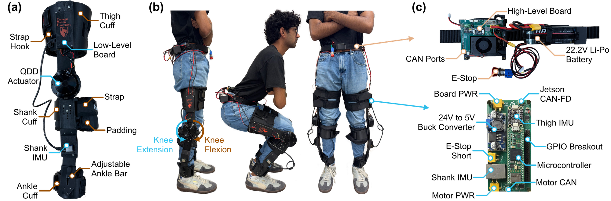
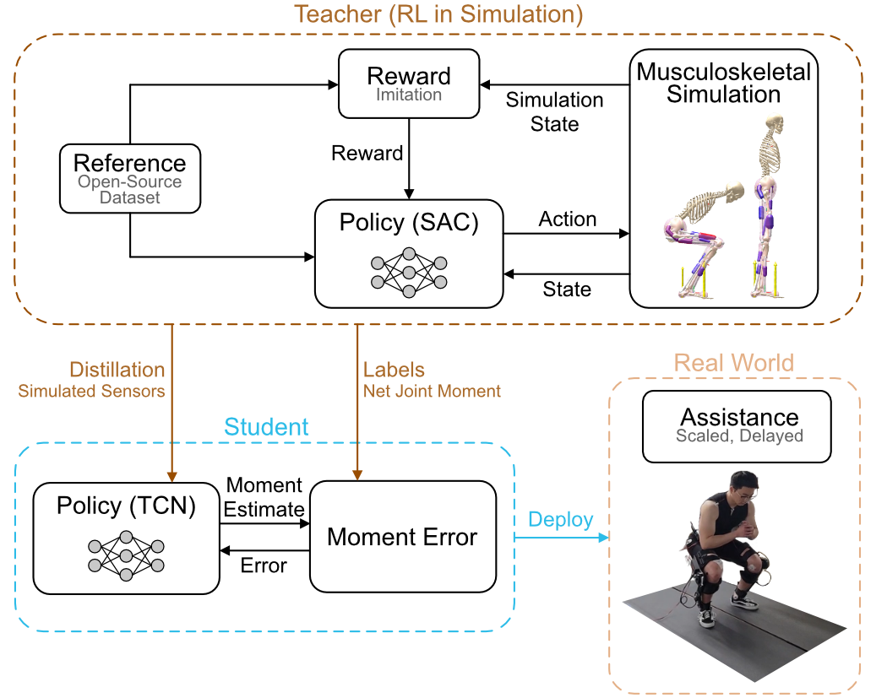
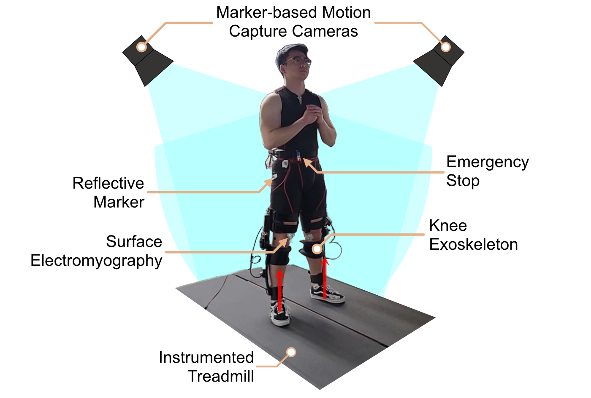
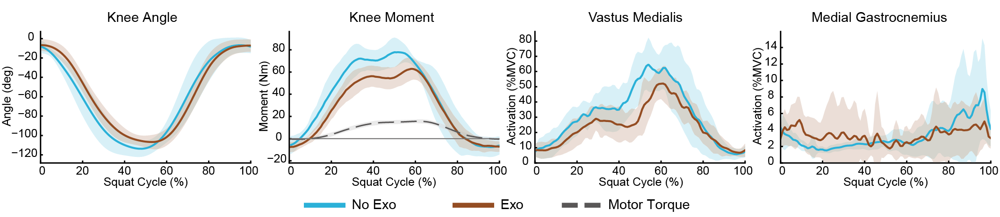
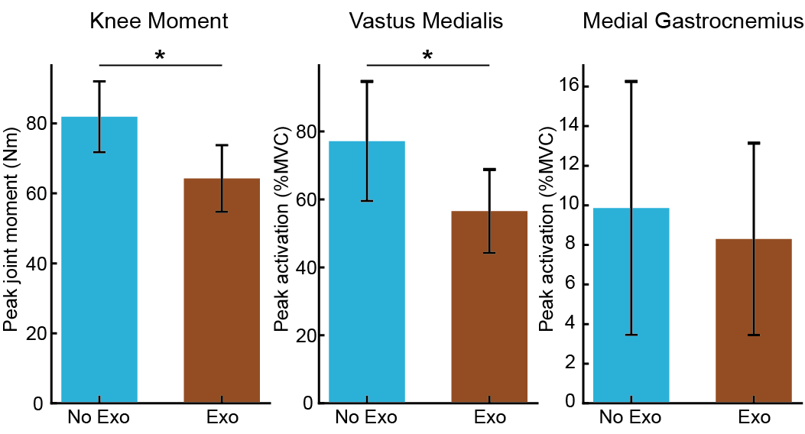

Abstract
Data-driven controllers have enabled lower-limb robotic exoskeletons to adapt assistance to the user across many tasks. A leading example is biological torque control, which estimates the user's own joint moment from onboard sensors and assists in proportion to that estimate. However, its estimators are trained on data recorded with the target device, so deploying the controller on new hardware requires collecting new data. Existing open-source efforts release hardware, software, or controllers separately, so this data collection must still be repeated on the assembled device. Here, we present an open-source knee exoskeleton, built from off-the-shelf components and widely available fabrication tools, with a biological torque controller derived entirely from simulation. A muscle-driven imitation policy reproduces squatting motions from an open biomechanics dataset, and the resulting knee moments are distilled into an estimator that uses only onboard sensors, so no training data are recorded on the device. In seven able-bodied participants, assistance reduced peak biological knee extension moment by 21.5% and peak vastus medialis activation by 26.7% during squatting, relative to squatting without the exoskeleton (p<0.05). Our results demonstrate that a biological torque controller derived from simulation can transfer to physical hardware without device-specific data collection. Because the hardware and training pipeline are released together, research groups can train and compare knee exoskeleton controllers on shared hardware without additional data collection overhead.
Robotic Knee Exoskeleton Design

Table I. Device Specifications
| Mechanical | |
|---|---|
| Total mass, bilateral* (kg) | 3.5 |
| Unilateral mass (kg) | 1.3 |
| Actuator mass (kg) | 0.49 |
| Rated / peak torque** (Nm) | 9 / 22 |
| Range of motion (deg) | 0–120 |
| Compute/Electrical | |
| Inertial sensor communication | SPI |
| Motor communication | CAN |
| Low-to-High level communication | CANFD |
| Low-level loop execution (µs) | ~80 |
| High/low-level round trip (ms) | <0.5 |
| Estimated run time (h) | ~2 |
*Includes the battery and embedded electronics.
**The stock motor driver limits output to 18 Nm per the manufacturer's safety constraint.
Simulation-Derived Biological Torque Control

Experimental Validation

Results


Table II. Comparison with Existing Knee Exoskeleton Platforms
| Device | Validation Subjects | Device Mass (kg) | Peak Torque (Nm) | Tasks | Reported Reduction |
|---|---|---|---|---|---|
| This Study | 7 able-bodied | 3.5 | 18 | Squatting | 26.7% vastus medialis activation |
| Nesler et al. | 1 able-bodied | 1.6a | 30 | Lifting and lowering | 78.9% vastus medialis activation |
| Lee et al. | 10 able-bodied | 4.4 | 15 | Level walking, ramps, and stairs | 6.2% metabolic costc |
| Zhang et al. | 6 able-bodied | 3.2 | 18 | Level walking, ramp and stair ascent | 4.3–12.0% metabolic cost |
| Boon et al. | 8 able-bodied | 2.6a | 55 | Stair ascent | 26% vastus medialis activation |
| Chen et al. | 2 able-bodied | 4.1 | 35 | Kneeling | 18.4% vastus medialis activationb,c |
| Huang et al. | 8 able-bodied | 3.5 | 14 | Level walking | 19.6% vastus medialis activationc |
| Sarkisian et al. | 1 post-stroke | 3.6a | 40 | Sit-to-stand | 29.3% vastus medialis activation |
| Yu et al. | 7 able-bodied | 3.5 | 54 | Squatting | 38.1% vastus medialis activation, 12.8% metabolic cost |
Mass is for a bilateral device unless noted. Activation reductions are in peak values and relative to no exoskeleton unless noted. aUnilateral device. bMean rather than peak activation. cRelative to the unpowered or zero-torque exoskeleton.
BibTeX
BibTex Code Here